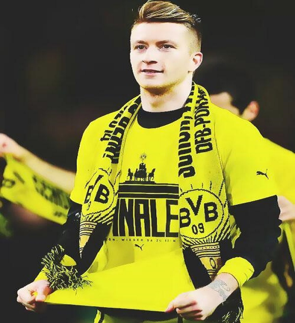
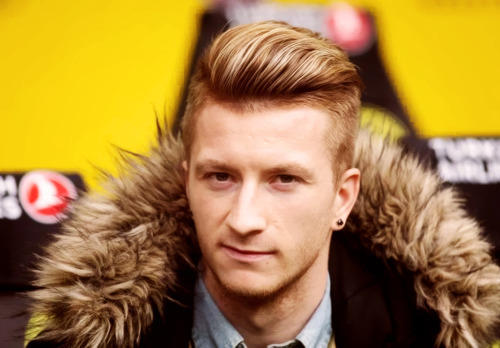
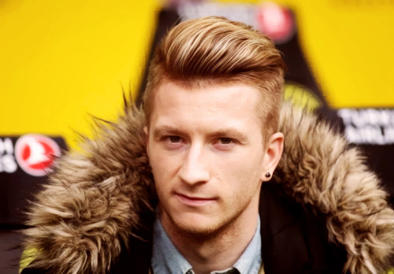
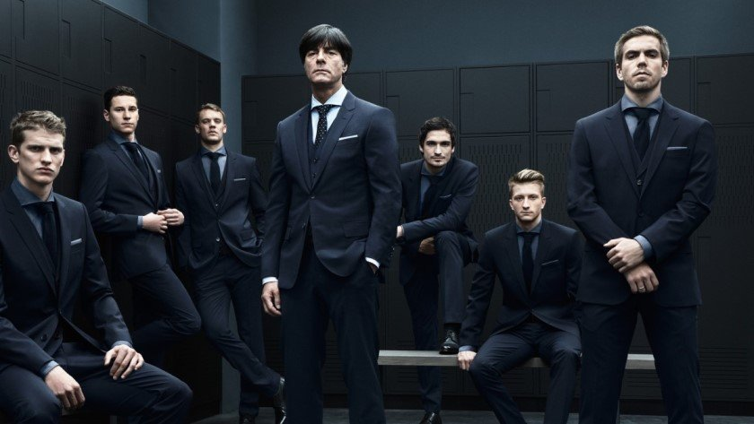
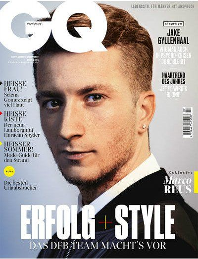

마르코 로이스 파헤치기
첫번째 선수는 도르트문트의 간판 공격수 "
마르코 로이스
"입니다.
 로이스는 독일 국적이며 89년생으로 올해로 29세입니다.
로이스는 현재 독일 분데스리가 보루시아 도르트문트에서 공격수로 활약하고
로이스는 독일 국적이며 89년생으로 올해로 29세입니다.
로이스는 현재 독일 분데스리가 보루시아 도르트문트에서 공격수로 활약하고
있으며 현재 득점 순위 3위에 랭킹되여 팀이 리그 1등을 하는데 기여하고 있습니다!
로이스는 잘 생긴 외모뿐만 아니라 뛰어난 실력까지 갖추고 있어서 전 세계적으로 인기 있는 선수이며 국내에도 두터운 남여 팬층을 겸비하고 있습니다.
국내에서 로이스가 큰 인기를 얻게 된 일화로는 "슛포러브"라는 소아암 환아들을 돕는 국내 자선 단체에서 로이스에게 자선행사 참여를 부탁하였습니다.
하지만 로이스는 지금은 부상때문에 참여하지 못할 것 같다며 직접 싸인한 유니폼을 건내주며 2주 후에 오면 하겠다면서 미안함을 전하였습니다.
이뿐만 아니라 로이스는 자신이 직접 디자인한 축구화를 발매하여 얻은 모든 수익을 암환자들을 돕는데 기부하는 등 계속 선행들을 꾸준히 해오고 있습니다.
인성 또한 갖추고 있기 때문에 전 세계적으로 인기 있는 선수가 된게 아닐까요🙂

자선 축구화 디자인하는 로이스
마르코 로이스 얼굴 파헤치기
지금부터는 마르코 로이스의 멋진 모습을 파헤쳐 보겠습니다!

리그 우승 후 세레모니

독일 국가대표 인터뷰
 

사복 패션

로이스 증명사진

독일 국가대표 단체 화보

유명 잡지 표지 모델 화보

지금까지 개간로 "마르코 로이스" 였습니다
Photographs By. 구글 이미지 검색